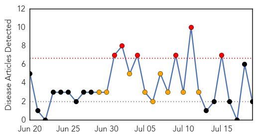
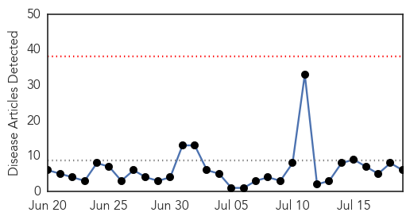
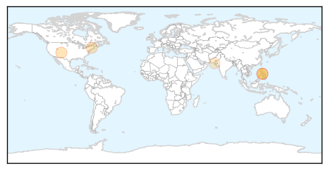
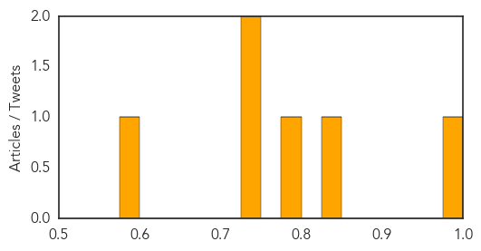

West Nile Virus
30-Day Web Trend
6 alerts, 9 warnings

30-Day Twitter Trend
0 alerts, 0 warnings

Article Locations

Article Confidences

Top Articles:
Top Tweets:
-
No tweets found for Jul 19, 2014
Measles
30-Day Web Trend
0 alerts, 0 warnings

30-Day Twitter Trend
0 alerts, 0 warnings

Article Locations
Article Confidences
Top Articles:
- 0.985
- State says Ohio measles outbreak could be at end - Twinsburg Bulletin
- 0.834
- The Durango Herald 07/16/2014
- 0.796
- WFMJ.com News weather sports for Youngstown-Warren Ohio
- 0.742
- Sedgwick County Health busy with measles questions
- 0.735
- Our Opinion: Don't buy the anti-vaccination rhetoric
- 0.587
- 21-month-old boy becomes city’s eighth polio victim
Top Tweets:
-
No tweets found for Jul 19, 2014